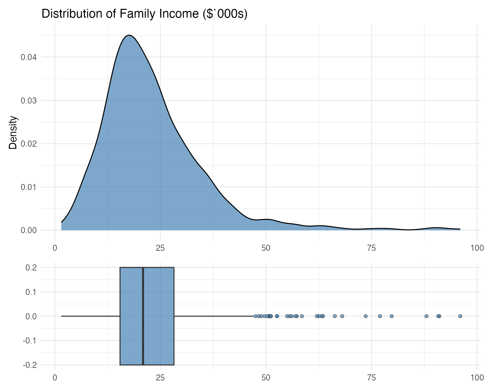
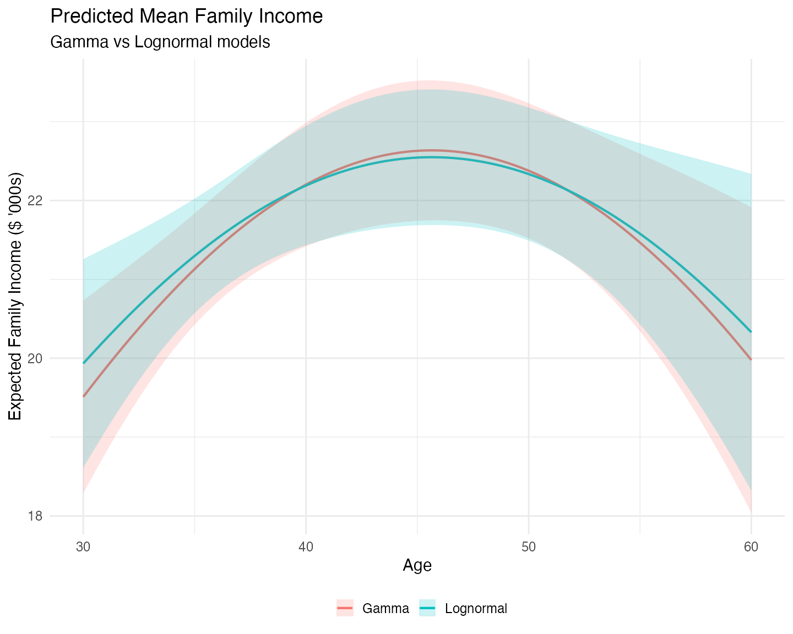
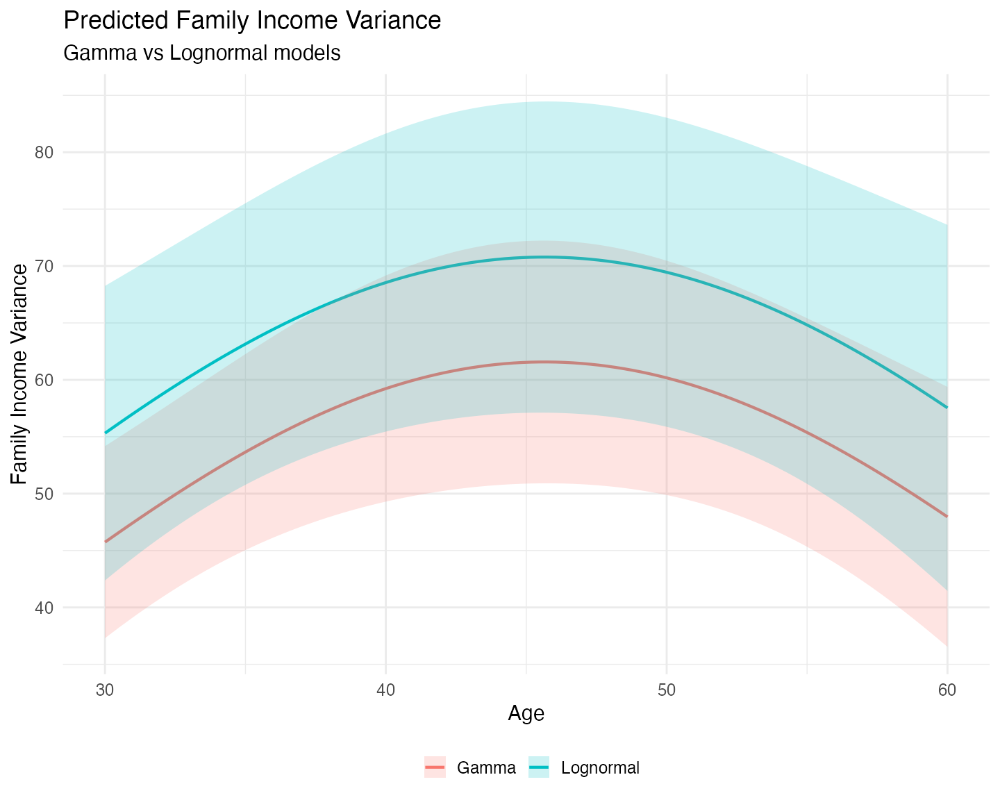

Gamma versus Lognormal
Modeling Positive, Right-Skewed Outcomes
Source:vignettes/mlmodels-gamma-lognormal.Rmd
mlmodels-gamma-lognormal.Rmd
suppressMessages({
library(mlmodels)
library(dplyr)
library(e1071)
library(ggplot2)
library(marginaleffects)
library(patchwork)
})Introduction
Positive and right-skewed variables (such as income, expenditures, or durations) are common in applied research. Two popular distributions for modeling them are the Gamma and the Lognormal. Both can produce similar predictions for the conditional mean, but normally differ substantially in how they model variance and tail behavior.
There is also a subtle difference in their flexibility to adapt the shape of the distribution:
The Gamma distribution can take on a wide range of shapes depending on its shape parameter: from very heavily skewed (low shape) to almost symmetric (high shape).
The Lognormal distribution is always right-skewed and has a more rigid functional form, because it is simply the exponential of a normal distribution. While changing the variance parameter makes the distribution wider or narrower, the overall shape of the density remains structurally fixed. This rigidity often forces the lognormal to assign more probability mass near zero than the data actually exhibits, which in turn requires a heavier right tail to match the observed mean.
Exploring the Outcome Variable
Given these differences it is always a good idea to explore the outcome variable. We do it two ways. The first one is graphical, using a density and a boxplot.
data(mroz)
# Scale faminc into thousands for smaller values.
mroz$incthou <- mroz$faminc / 1000
# Use ggplot to create both plots
p_density <- ggplot(mroz, aes(x = incthou)) +
geom_density(fill = "steelblue", alpha = 0.7) +
labs(title = "Distribution of Family Income ($`000s)", x = NULL, y = "Density") +
theme_minimal(base_size = 15)
p_box <- ggplot(mroz, aes(x = incthou)) +
geom_boxplot(fill = "steelblue", alpha = 0.7, width = 0.4, outlier.shape = 21) +
labs(x = NULL, y = NULL) +
theme_minimal(base_size = 15)
# Use patchwork to put them together, one on top of the other.
p_density / p_box + plot_layout(heights = c(2, 1))
Both the density and the boxplot show us that, indeed, the distribution is right skewed, with a long right tail. The density, however, shows us that, if it weren’t for that long right tail, the distribution would be quite symmetric, with a mode around $16 – $18 thousand. The boxplot further shows that the median is slightly higher than that mode, clearly pushed that way by the observations on the right tail.
Besides a graphical analysis we do a numerical one, getting some summary statistics:
# Store the density to get the mode.
d <- density(mroz$incthou, na.rm = TRUE)
mroz |>
summarise(
Min = min(incthou),
Q1 = quantile(incthou, probs = 0.25),
Median = median(incthou),
Q3 = quantile(incthou, probs = 0.75),
Max = max(incthou),
Mean = mean(incthou),
SD = sd(incthou),
Mode = d$x[which.max(d$y)],
Skewness = skewness(incthou, type = 3) # Alternative moments::skewness
)
#> Min Q1 Median Q3 Max Mean SD Mode Skewness
#> 1 1.5 15.428 20.88 28.2 96 23.08059 12.1902 17.52294 1.8976The summary statistics reinforce the visual impression. The mean ($23.08 thousand) is substantially higher than the median ($20.90 thousand), as expected in a right-skewed distribution. More interestingly, the width of the first quartile (from the minimum to Q1) is almost as large as the interquartile range itself. This indicates that the lower part of the distribution is not heavily concentrated near zero – there is meaningful spread even in the bottom 25% of families.
This structure is more naturally compatible with the Gamma distribution, which is flexible in the lower tail. In contrast, the Lognormal distribution tends to pile up probability mass close to zero and then compensate with a heavier right tail. Because this variable does not exhibit strong concentration near zero, the Lognormal is forced to over-stretch its tail, which makes us expect that it will predict higher variances than the Gamma model.
Model Estimation
We estimate both a Gamma and a
Lognormal model using very similar syntax – this
consistency is intentional in mlmodels.
# Gamma model
fit_gamma <- ml_gamma(incthou ~ age + I(age^2) + huswage + educ + unem + kidslt6,
data = mroz)
# Lognormal model
fit_lognormal <- ml_lm(log(incthou) ~ age + I(age^2) + huswage + educ + unem + kidslt6,
data = mroz)Notice how easy it is to switch between distributions: you only need
to change the estimator name (ml_gamma vs
ml_lm) while keeping the rest of the formula structure the
same.
Important note on the lognormal model
For a lognormal model, always use ml_lm() on the
log-transformed outcome (log(incthou)), as shown above.
Do not manually transform the variable before fitting.
If you pass a pre-logged variable, ml_lm() has no way of
knowing you are estimating a lognormal model. This would lead to
incorrect response predictions and variance predictions (they would
refer to the log scale instead of the original scale).
Estimates
We display the estimates using summary() with robust
standard errors.
summary(fit_gamma, vcov.type = "robust")
#>
#> Maximum Likelihood Model
#> Type: Homoskedastic Gamma Model
#> ---------------------------------------
#> Call:
#> ml_gamma(value = incthou ~ age + I(age^2) + huswage + educ +
#> unem + kidslt6, data = mroz)
#>
#> Log-Likelihood: -2554.46
#>
#> Wald significance tests:
#> all: Chisq(6) = 342.798, Pr(>Chisq) = < 1e-8
#>
#> Variance type: Robust
#> ---------------------------------------
#> Estimate Std. Error z value Pr(>|z|)
#> Value (incthou):
#> value::(Intercept) 0.85756 0.37648 2.278 0.02274 *
#> value::age 0.05541 0.01735 3.194 0.00140 **
#> value::I(age^2) -0.00061 0.00020 -3.068 0.00215 **
#> value::huswage 0.07662 0.00537 14.268 < 2e-16 ***
#> value::educ 0.04372 0.00705 6.198 5.73e-10 ***
#> value::unem -0.01149 0.00434 -2.650 0.00805 **
#> value::kidslt6 -0.05936 0.02926 -2.029 0.04245 *
#> Scale (log(nu)):
#> scale::lnnu 2.11891 0.07292 29.059 < 2e-16 ***
#> ---------------------------------------
#> Signif. codes: 0 '***' 0.001 '**' 0.01 '*' 0.05 '.' 0.1 ' ' 1
#> ---
#> Number of observations:753 Deg. of freedom: 746
#> Pseudo R-squared - Cor.Sq.: 0.3387 McFadden: 0.09864
#> AIC: 5124.92 BIC: 5161.91
#> Shape Param.: 8.32 - Coef.Var.: 0.35
summary(fit_lognormal, vcov.type = "robust")
#>
#> Maximum Likelihood Model
#> Type: Homoskedastic Lognormal Model
#> ---------------------------------------
#> Call:
#> ml_lm(value = log(incthou) ~ age + I(age^2) + huswage + educ +
#> unem + kidslt6, data = mroz)
#>
#> Log-Likelihood: -2570.00
#>
#> Wald significance tests:
#> all: Chisq(6) = 332.748, Pr(>Chisq) = < 1e-8
#>
#> Variance type: Robust
#> ---------------------------------------
#> Estimate Std. Error z value Pr(>|z|)
#> Value (log(incthou)):
#> value::(Intercept) 0.94682 0.39252 2.412 0.0159 *
#> value::age 0.04597 0.01777 2.586 0.0097 **
#> value::I(age^2) -0.00050 0.00020 -2.492 0.0127 *
#> value::huswage 0.07611 0.00644 11.814 < 2e-16 ***
#> value::educ 0.04871 0.00668 7.291 3.08e-13 ***
#> value::unem -0.01118 0.00464 -2.407 0.0161 *
#> value::kidslt6 -0.07247 0.02893 -2.505 0.0122 *
#> Scale (log(sigma)):
#> scale::lnsigma -1.01881 0.04244 -24.004 < 2e-16 ***
#> ---------------------------------------
#> Signif. codes: 0 '***' 0.001 '**' 0.01 '*' 0.05 '.' 0.1 ' ' 1
#> ---
#> Number of observations: 753
#> Residual degrees of freedom: 746
#> Multiple R-squared: 0.511 Adjusted R-squared: 0.5071
#> AIC: 5156.00 BIC: 5193.00
#> Residual standard error (sigma): 0.361Both models produce very similar coefficient estimates in the value (mean) equation, suggesting they capture the main relationships in roughly the same way.
Note on Model Fit Statistics
You cannot compare the R2 across models directly.
- The R2 of the Lognormal model,
measures how well the model fits the natural log of
income (
log(incthou)). - The R2 measures of the Gamma
model reflect how well the model fits on the original scale of
income (
incthou).
You can, very easily, calculate an R2 for the Lognormal model that is directly comparable to one of the R2 shown for the gamma model: the correlation squared of the outcome and predicted response.
# predict the response
resp_ln <- predict(fit_lognormal)
r2_original <- cor(mroz$incthou, resp_ln$fit, use = "complete.obs")^2
round(r2_original, 4)
#> [1] 0.3457We see that it is slightly higher than that of the Gamma model.
You, also, can directly compare the log-likelihood, AIC, and BIC, the
log-likelihoods are defined in terms of the actual outcome
(incthou). But only if you specified the
log() function in the value formula in
ml_lm. These measures seem to favor the Gamma
model.
To formally compare the two non-nested models, we can use the Vuong test:
vuongtest(fit_gamma, fit_lognormal)
#>
#> Vuong's (1989) Test
#> --------------------------------------------------
#> Model 1: Homoskedastic Gamma Model
#> Model 2: Homoskedastic Lognormal Model
#> --------------------------------------------------
#> z-stat: 1.493
#> p-value: 0.1354
#> --------------------------------------------------
#> Inconclusive test: neither model is preferred.The positive value of the z statistic follows from the Gamma model (the first one entered in the function) having a higher average log-likelihood across observations, but it is not large enough for it to be statistically significant, and there doesn’t seem to be a clear winner.
Postestimation Analysis
We have just seen how the estimates of the coefficients of the value equation and its standard errors, are very close across both models, which indicates that both capture the mean very closely. There may be slight differences.
We also want to see if both model capture the variance differently. Because the Gamma model’s flexibility to change its overall distributional shape, and the Lognormal model is very rigid about it, we expect that both models will not predict the variance as closely.
We are going to explore this graphically. For that purpose, we are
going to explore the relationship of the predicted mean and predicted
variance, with one of the predictors (age), across
models.
First, we use marginaleffects’ datagrid()
function to form a dataframe, with the predictors, for 100 values of
age, ranging from its minimum (30) to its maximum (60), and
at the average of all other predictors. We can use either model because
all that datagrid() needs is to pull the dataset and the
variables involved in the estimation, and both have the same ones.
new_data <- datagrid(model = fit_gamma, # use any model to get the structure
age = seq(30, 60, length.out = 100),
FUN = mean)Notice the beauty of datagrid(). You just need to define
the values for one of the predictors in the model, and in the
FUN argument you se what function you want to apply to the
rest. This way only age varies, and all other variables are
constant at their respective means.
Now we predict the mean and the variance of the outcome for both
models with predictions() from
marginaleffects, to also get a confidence intervals.
reponse (mean) is the default prediction type in both
models so we do not need to set the type argument.
mean_ln <- predictions(fit_lognormal, newdata = new_data, vcov = "robust")
mean_gam <- predictions(fit_gamma, newdata = new_data, vcov = "robust")To predict the variance we use type = "var" for the
Gamma model, and type = "var_y" for the Lognormal model. In
a Lognormal model type = "var" predicts the variance of the
log scale (see ?predict.mlmodel).
var_ln <- predictions(fit_lognormal, type = "var_y", newdata = new_data, vcov = "robust")
var_gam <- predictions(fit_gamma, type = "var", newdata = new_data, vcov = "robust")Analysis of the Mean Predictions
We are going to plot both mean predictions together. To do that, we first bind the two predicted data frames together, while adding a variable with each model’s name to use later in the graph.
means <- bind_rows(
mean_gam |> mutate(Model = "Gamma"),
mean_ln |> mutate(Model = "Lognormal")
)
ggplot(means, aes(x = age, y = estimate, color = Model, fill = Model)) +
geom_line(linewidth = 1) +
geom_ribbon(aes(ymin = conf.low, ymax = conf.high), alpha = 0.2, color = NA) +
labs(title = "Predicted Mean Family Income",
subtitle = "Gamma vs Lognormal models",
x = "Age",
y = "Expected Family Income ($ '000s)",
color = "",
fill = "") +
theme_minimal(base_size = 15) +
theme(legend.position = "bottom")
Both models produce very similar predictions for the conditional mean of family income across the age range. This aligns with the similar coefficient estimates we saw in the value equations of both models.
However, some interesting differences emerge:
- The Lognormal model predicts a slightly higher mean at the tails (younger and older ages) and a slightly lower mean in the middle of the age distribution.
- The Lognormal predictions are relatively more uncertain at the extremes (wider confidence bands), while the Gamma model produces more stable predictions across the full age range.
If your main interest is in predictions near the center of the data (around the mean or median of age), the practical difference is small. However, if you care about predictions for younger or older individuals, the Gamma model appears more efficient and stable.
Analysis of the Predictions of the Variance
We now produce the graph for the predictons of the variance in a similar manner:
vars <- bind_rows(
var_gam |> mutate(Model = "Gamma"),
var_ln |> mutate(Model = "Lognormal")
)
ggplot(vars, aes(x = age, y = estimate, color = Model, fill = Model)) +
geom_line(linewidth = 1) +
geom_ribbon(aes(ymin = conf.low, ymax = conf.high), alpha = 0.2, color = NA) +
labs(title = "Predicted Family Income Variance",
subtitle = "Gamma vs Lognormal models",
x = "Age",
y = "Family Income Variance",
color = "",
fill = "") +
theme_minimal(base_size = 15) +
theme(legend.position = "bottom")
The difference between the two models becomes much clearer when we look at predicted variance:
- The Lognormal model consistently predicts higher variance and wider confidence intervals across all ages compared to the Gamma model.
- This reflects the more rigid shape of the lognormal distribution, which tends to assign more probability mass near zero and compensates with a heavier right tail to match the observed mean.
- The Gamma model, being more flexible in its shape, produces more moderate variance predictions that better match the observed distribution of family income.
This is consistent with our earlier observation about the data: family income is right-skewed but not heavily concentrated near zero. The Gamma distribution handles this shape more naturally.
Concluding Remarks
The mlmodels package offers two strong and convenient
approaches for modeling positive, right-skewed outcomes: the
Gamma model (ml_gamma()) and the
Lognormal model (via ml_lm() on the
log-transformed outcome).
In this application, the Gamma model performed better overall:
- It produced more stable and efficient mean predictions at the tails of the age distribution.
- It yielded more moderate (and likely more realistic) variance predictions across the entire range.
While the two models generate very similar predictions near the center of the data, the differences become noticeable in the tails and in the predicted dispersion.
A formal Vuong test did not find statistically significant evidence that one model is clearly superior to the other. This is common in practice — the “best” choice often depends on whether your main interest lies in the conditional mean, variance, or tail behavior.
This vignette aimed to give you both a practical illustration and a structured way to compare the two models using graphical analysis, summary statistics, model fit measures, and prediction comparisons. We hope it provides you with a useful framework when facing similar positively skewed outcomes in your own work.
Happy modeling!